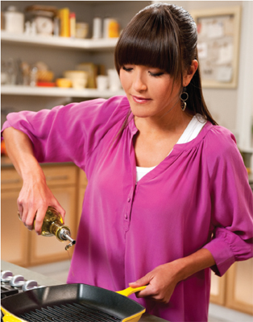
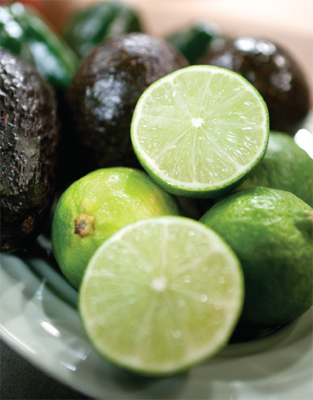

Now that you’ve invested in the right equipment, you’re ready to get cooking. In addition to choosing lower-calorie foods, what you do with them can make a real difference to your waistline. As you familiarize yourself with the CYT recipes over the following pages, you’ll pick up lots of ideas for cooking without the fat or extra calories.

Instead of frying, grill, bake, or stir-fry food using minimal oil in a nonstick pan.
Poaching in a liquid (such as water or stock) is fat-free and an excellent way to keep meat and fish moist and full of flavor. A chicken breast, for example, tastes much more succulent poached in stock than roasted. Just cover the food in liquid, add some herbs or aromatics like carrot, onion, or ginger for a flavor boost. Place a lid on the pan and cook for the same amount of time you would roast, grill, or fry.
Try cutting the amount of sugar in recipes in half (apart from ours, which are already low). It works for most dishes except jam, meringue, and ice cream. Or use one of the sugar substitutes recommended on our list of cupboard ingredients on page 48.
Steaming vegetables preserves more color, flavor, nutrients, and crunch than boiling. You can also use your steamer for fish and meat. If you have a stacking system, such as a bamboo steamer, put the vegetables that will take longest to cook at the bottom.
Buy lean cuts of meat and trim off excess fat before cooking—or ask your butcher to do it for you—and remove the skin from poultry.
Even if a recipe does call for some oil for roasting or frying that doesn’t mean all of it has to end up in the dish. You can drain off the fat at any point during cooking and transfer food onto paper towels to blot it before serving.
If you need to prevent sticking, use a pastry brush to put the oil onto the food itself, not the pan, griddle, or grill. This way you’ll use much less. When you grill meat on a griddle, a common mistake is to add more oil because you think it’s stuck. Don’t—the meat will release itself from the ridges once it’s charred.
When stir-frying in a wok, you only need a tiny drizzle of oil to start. Keep the food moving in the wok and the wok moving over the heat and nothing will stick. Then, to steam the food, add a splash of liquid such as water or soy sauce and put on the wok lid. Most dishes that you think have to be fried are just as successful grilled on a nonstick griddle.
To save on washing up and soul-destroying oven cleaning, line your grill pan and the bottom of your oven with foil to catch drips. You can even line roasting trays with a nonstick sheet.
Comparative Cooking Methods
|
FILLET OF COD: |
|
|
Deep fried in batter |
445 calories |
|
Pan-fried in 2 teaspoons vegetable oil |
150 calories |
|
Grilled |
96 calories |
|
Steamed |
96 calories |
|
CHICKEN BREAST: |
|
|
Chicken Kiev from a package |
456 calories |
|
Pan-fried in 1 teaspoon butter and 1 teaspoon vegetable oil (no skin) |
202 calories |
|
Brushed with 1 teaspoon honey and grilled (no skin) |
161 calories |
|
Oven-baked in a foil packet with chicken stock and a dash of white wine |
151 calories |
Tip
If you need to prevent sticking, use a pastry brush to put the oil onto the food itself, not the pan, griddle, or grill. This way you’ll use much less. When you grill meat on a griddle, a common mistake is to add more oil because you think it’s stuck. Don’t—the meat will release itself from the ridges once it’s charred.
